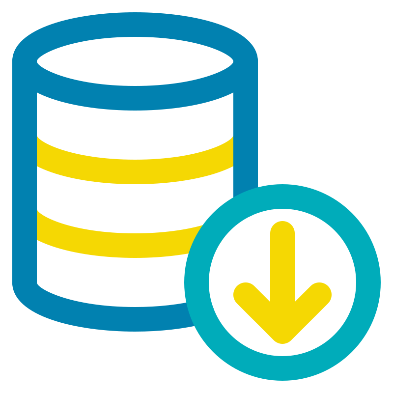
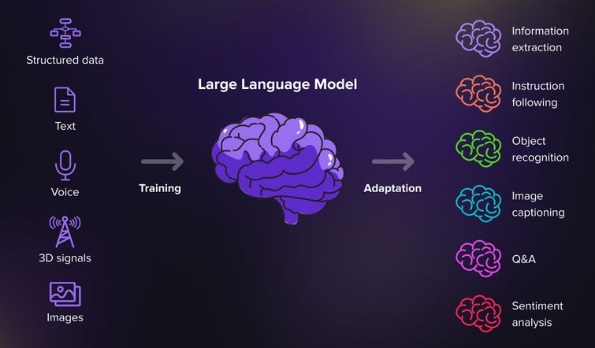

Data scientist 2020-2023
Fondasol
Data Scientist innovant avec 3+ ans d'expérience dans l'industrie. Expert en transformation de données complexes en insights stratégiques, spécialisé en modélisation prédictive et géostatistique. Maîtrise avancée de Python et R. Cherche à optimiser la prise de décision data-driven dans une entreprise leader du secteur technologique.
Professionnel pluridisciplinaire, je possède des compétences approfondies en data engineering, data analysis et data science, avec un souci constant de la qualité des données et du code.

En tant que Data Scientist, je possède une expertise approfondie en analyse et manipulation de données, notamment grâce à ma maîtrise de Python, R et SQL. Je suis également compétent en C++, Java, Julia, Scala et Matlab, ce qui me permet de résoudre divers problèmes de modélisation et d'analyse. Mes compétences en Git, Linux et Docker garantissent une gestion de code efficace et un déploiement fluide des applications. De plus, je suis à l'aise avec les technologies Big Data (Kafka, Spark, Hadoop, Hive) pour le traitement de vastes ensembles de données. Bien que mon expérience avec AWS et Google Cloud Platform soit en développement, je suis capable de déployer et de gérer des solutions de données dans le cloud. Enfin, je suis expert en visualisation de données et maîtrise parfaitement Tableau, Power BI, Streamlit, DASH et Rshiny pour créer des tableaux de bord percutants et communiquer efficacement les résultats.
En tant que data scientist professionnel, je maîtrise un large éventail de compétences essentielles à notre domaine :
Cette polyvalence me permet de gérer avec succès des projets de data science de bout en bout, en apportant une valeur ajoutée à chaque étape du processus.
Université Claude Bernard Lyon 1
Université Claude Bernard Lyon 1
Université d’Avignon
Lycée Alphonse Daudet, Nîmes
Fondasol
Laboratoire d'Informatique en Images et Systèmes d'Information - CNRS

Un grand modèle de langage (LLM) est un type de programme d'intelligence artificielle (IA ) capable, entre autres tâches, de reconnaître et de générer du texte.